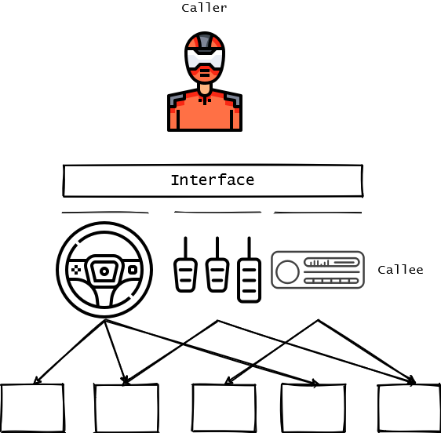
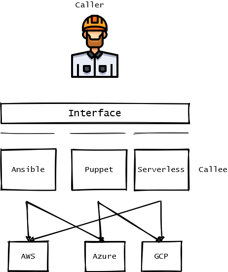

- 呼叫者: 抽象一點, 意思是使用流程依賴於概念較為抽象的介面, 少依賴具體
- 被呼叫者: 具體一點, 有彈性(提供的使用介面足夠抽象)
化繁為簡, 以簡馭繁, 具體繁瑣的部分還是會存在於被呼叫者, 介面是兩者之間的承諾(commitment)
用安德魯大大的抽象化設計；折扣規則的設計機制來看, 重點如下
隱藏細節, 提取重點
思考這類問題時別太在意對錯，這種思考題目是沒有對錯的。會發生的狀況是，你隱藏的細節，不是你解決的問題需要的；你提取的重點，也剛好不是你要解決的問題的重點；如此而以，只是適不適合的差別。因此要是覺得不對勁，請回頭重新想想。
最終目的是不要修改購物車的主程式，就要能夠支援後面的各種折扣規則
例子
以駕駛者和車子為例, 中間的使用介面是方向盤和踏板, 控制面板, 細節的部份可能是冷卻系統, 潤滑系統, 點火系統, 啟動系統, 傳動系統, 煞車系統, 懸吊系統, 轉向系統

以工程師和部屬工具為例, 中間的使用介面是Ansible, Puppet, Serverless, 細節的部份可能是AWS, Azure, GCP

依賴反轉原則 Dependency Inversion Principle (DIP)
高層模組不應該依賴於低層模組, 兩者皆應該依賴抽象
從A點移動到B點, 移動是個抽象的概念, 可以用不同的方式實作, 例如：搭火車，搭計程車，開車，騎機車，走路
今天的需求若是去桃園聽五月天演唱會, 要完成這個需求，直接依賴搭火車的實作，如果有一天火車這個工具消失了，呼叫者要改